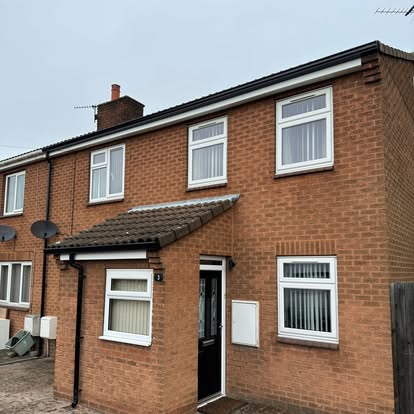
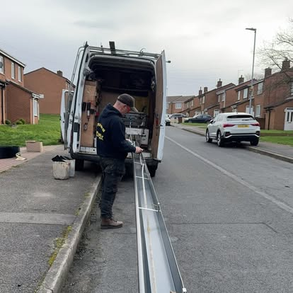
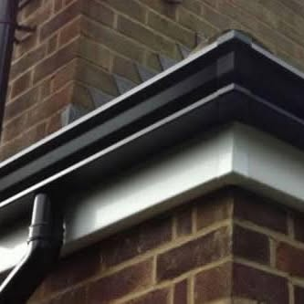

Gutterworx · West Yorkshire
Recent guttering and roofline work.
A selection of seamless guttering, fascia and supporting roofline projects. Follow Gutterworx on Facebook for the latest updates.






Gutterworx · West Yorkshire
A selection of seamless guttering, fascia and supporting roofline projects. Follow Gutterworx on Facebook for the latest updates.


